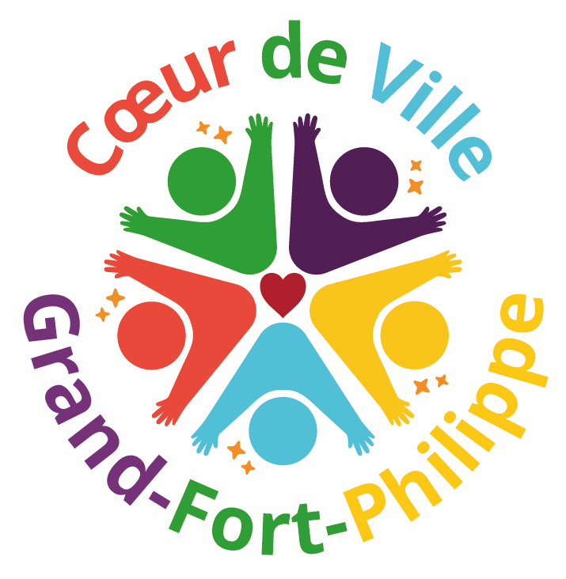

Création d'un site web
Réalisation d'un site web dans le cadre de ma formation en DEUST Webmaster et Métiers de l’Internet. Ce projet m'a permis de mettre en pratique mes connaissances en HTML, de créer une structure de page organisée et de travailler la navigation entre différentes pages.
Création graphique
Réalisation de différents travaux graphiques dans le cadre de ma formation. Ces projets m'ont permis de développer mes compétences en composition, mise en page, création visuelle et utilisation de la suite Adobe.
Refonte d'une identité visuelle
Réalisation d'un projet de refonte de l'identité visuelle d'une association. Le travail comprenait la modernisation du logo, la création de logos pour différents secteurs ainsi que la réalisation d'une charte graphique.

Communication digitale
Création de contenus numériques dans le but de développer mes compétences en communication digitale. Ce projet m'a permis de travailler la présentation d'informations et la création de supports adaptés à différents usages numériques.